Welcome
Help version: 2.0.0
Application version: 2.0.0
Creator: Eng. Dipl. Dan Dumitru Pasare
Contact: pasaredan1979@gmail.com
AudioMancer helps turn a written book or story into audiobook WAV files. It guides you through the work one page at a time: import the source, clean the text, split it into chunks, optionally translate it, prepare narrator and character voices, generate speech audio, and assemble the final audiobook files.
Work through the left sidebar from top to bottom. Review visible text and audio before you press approval buttons. AudioMancer keeps completed work where possible: local chunk, translation, character, voice, Speech Block, and Audio Block edits reset only the affected downstream records, while full upstream regeneration still clears dependent workflow data.
Scene Ambience can add ordered individual sound blocks to a scene. Each ambience block has its own prompt and negative prompt while using the Scene Ambience duration from TTS Settings, so you can build an atmosphere from simple sound sources rather than one complex mixed prompt. Speech Blocks can preview selected audio directly from the page, Audio Blocks can generate narrator, character, and Scene Ambience WAV files, and Audio Assembly can preview and include mixed ambience in the final audiobook.
Settings includes light and dark themes, editable custom themes, separate font controls for interface controls and long text windows, configurable mouse-wheel scroll steps, and portable theme JSON import/export. Narator Voice and Character Voices can import validated WAV samples with operator-entered sample text. AI Settings and TTS Settings use a consistent Cancel, Save, and OK flow.

What You Need
- AudioMancer: the desktop application and this offline help bundle.
- VoiceWeaver: required for audio generation. Install it on the same computer or on another computer reachable on the same local network.
- AI text model: optional for deterministic-only cleanup/chunking, but required for AI cleanup, AI chunking, translation, character discovery, and narrator-plus-character Speech Blocks. Same-narrator Speech Blocks needs no AI model unless Scene Ambience is enabled.
- Project storage: enough disk space for source files, intermediate WAV files, and final audiobook outputs.
VoiceWeaver must be running before narrator samples, character samples, or Audio Blocks can be
generated. If VoiceWeaver runs on a different computer, use that computer's LAN IP address in
TTS Settings, for example http://192.168.1.25:8000 or the endpoint required by your
VoiceWeaver installation.
Translation targets supported by AudioMancer are English, Romanian, Japanese, Korean, Chinese, German, French, Russian, Portuguese, Spanish, and Italian. The audio language follows the project language selected on the Home page and requires VoiceWeaver voices/models that support that language.
Install And Start
Windows
- Download the AudioMancer Windows zip file.
- Right-click the zip file and choose Extract All.
- Open the extracted folder.
- Double-click
AudioMancer.exeorStart-AudioMancer.cmd.
Ubuntu
- Download the AudioMancer Ubuntu zip file.
- Extract the full zip folder.
- Open a terminal in the extracted folder.
- Run
./AudioManceror./start-audiomancer.sh.
Settings
Open Settings from the top toolbar before starting a long project. This dialog controls the interface language, completion beep, mouse-wheel scroll steps, and runtime UI theme.
- Choose the interface language.
- Select one of the built-in themes, such as Default Light, Default Dark, or Dark Contrast.
- Enable or disable the completion beep. When it is enabled, AudioMancer beeps once as soon as a long operation ends on its own, whether it succeeded or failed, so you can start a run and step away from the machine. An operation you cancel yourself stays silent.
- Set Scroll steps from 1 to 5 to control how many lines common text and list panes move per mouse-wheel notch. The default is 1.
- Use Apply to save and refresh the running interface without closing Settings, or use OK to save and close.
Custom Themes
Built-in themes can be duplicated into custom themes. Custom themes let you edit the theme name, the font used by labels and controls, the font used by larger text review windows, and semantic color roles used by the interface. The text-window font is useful when book text needs to be larger or more readable without enlarging every button and label.
- Create or duplicate a custom theme.
- Set the UI-control font family and point size.
- Set the text-window font family and point size.
- Edit color roles and check the preview area.
- Apply or OK to persist the selected theme in
settings.json.
Use Export to save a custom theme as portable JSON, or Import to bring a theme JSON file into the current installation. Imported themes are copied into the custom theme list; if a theme id already exists, AudioMancer gives the imported copy a unique suffix.
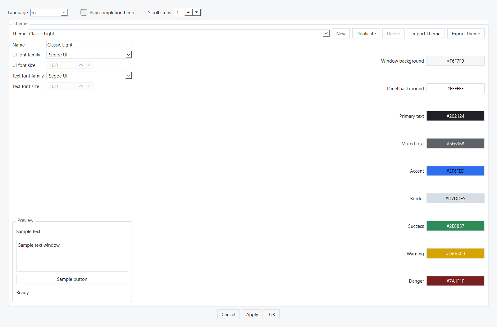
AI Settings
AI Settings stores chat-model profiles for AI-assisted cleanup, chunking, translation, character discovery, and Speech Blocks. These profiles do not generate audio. Audio generation is handled by VoiceWeaver through TTS Settings.
Create A Profile
- Open AI Settings.
- Create a profile with a clear name, such as
Translation_gpt-5.5orSpeechBlocks_LMStudio_Qwen3. - Set Backend Kind to an OpenAI-compatible backend.
- For OpenAI online models, use
https://api.openai.com/v1and enter an API key acquired from your OpenAI account. - For LM Studio, start the local server and use
http://localhost:1234/v1, or the LAN address if LM Studio is on another computer. - Enter the model name exactly as the provider or LM Studio shows it.
- Use Connect to verify the profile, then set default profiles for each operation.
- Click Save to persist without closing the dialog, or OK to persist and close.
You can switch among profiles while editing: each profile keeps its unsaved values inside the open dialog. Save or OK persists the session; Cancel still discards it. A successful Connect refreshes that profile's model list. When the exact selected model reports a context window, AudioMancer fills Context Window automatically unless you have entered a value yourself. LM Studio uses the loaded instance's active context when available, while Ollama reads the selected model's details. If a later connection attempt fails, the error is shown without removing the last successful model choices or discovered context.
Recommended OpenAI Online Profiles
| Operation | Recommended model | Temperature | Context | Max output |
|---|---|---|---|---|
| AI Cleanup | gpt-5.4-nano | 0.0-0.1 | 400000 | 32768 |
| AI Chunking | gpt-5.4-mini | 0.1 | 400000 | 32768 |
| AI Translation | gpt-5.5 | 0.2 | 1000000 | 64000 |
| Character Discovery | gpt-5.4 | 0.1 | 1000000 | 64000 |
| Speech Blocks | gpt-5.4 | 0.0-0.1 | 1000000 | 64000 |
Recommended LM Studio Local Profiles
| Operation | Recommended model | Fallback | Temperature | Context |
|---|---|---|---|---|
| AI Cleanup | mistralai/mistral-small-3.2 | openai/gpt-oss-20b | 0.0-0.05 | 32768 |
| AI Chunking | qwen/qwen3-30b-a3b-2507 | mistralai/mistral-small-3.2 | 0.05 | 65536 |
| AI Translation | google/gemma-3-27b | qwen/qwen3-30b-a3b-2507 | 0.15-0.2 | 32768 |
| Character Discovery | qwen/qwen3-30b-a3b-2507 | mistralai/mistral-small-3.2 | 0.05 | 65536 |
| Speech Blocks | qwen/qwen3-30b-a3b-2507 | mistralai/mistral-small-3.2 | 0.0-0.05 | 65536 |
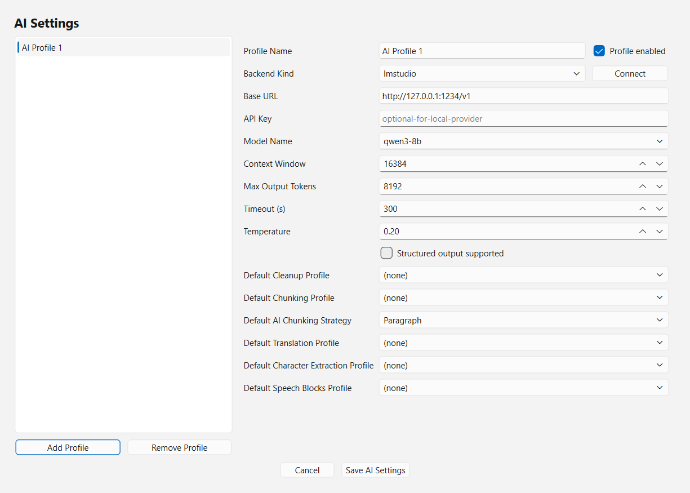
TTS / VoiceWeaver Settings
TTS Settings controls the VoiceWeaver runtime used for narrator samples, character samples, and final Audio Blocks. Current AudioMancer audio generation works only through VoiceWeaver. It also stores the Scene Ambience sound-generation defaults used after Speech Blocks create ambience prompts.
- Install and start VoiceWeaver on this computer or on another computer in the same network.
- Open TTS Settings.
- Enter the VoiceWeaver runtime base URL.
- Use Test Connection so AudioMancer can discover available models and limits.
- Adjust preview and generation timeouts if your runtime is slow.
- Set Narration Block Target (s) if you want shorter same-narrator blocks than the model allows. Leave it at Automatic (model limit) to use the widest safe block the discovered TTS model supports. This setting can only shorten blocks: the model token budget always remains the hard limit, because asking for more audio than the model can generate produces truncated or silent output.
- Set Scene Ambience Placement to None, Openers and closers, or Openers, closers, and scene changes.
- Set the Scene Ambience block duration and maximum blocks per sequence. The LLM may use fewer blocks when fewer distinct sound sources are useful.
- Adjust Scene Ambience guidance, inference steps, and seed for the sound-prompt model. Use Random seed when repeatability is not required.
- Click Save to persist without closing the dialog, or OK to persist and close.
The audiobook language and narration mode are selected on the Home page and then locked for the project. TTS Settings stays focused on runtime connection, discovered models, text limits, generation timeouts, and Scene Ambience sound-model defaults. Speech Blocks ambience enablement comes from the Scene Ambience Placement setting.
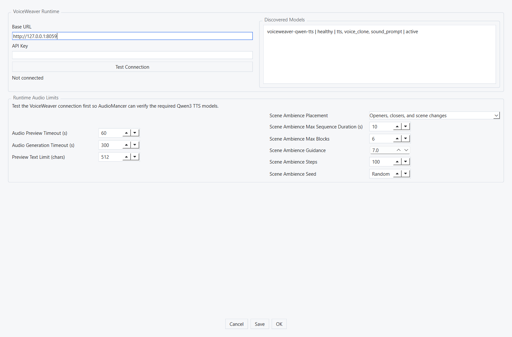
Create Or Open A Project
- Click New Project to make a new work folder.
- Choose a simple project name, such as the book title.
- Click Select Source File on the Home page.
- Select the book or story file. Supported formats include TXT, PDF, RTF, DOCX, ODT, MD, and EPUB.
- TXT and RTF extraction recognizes UTF-8 plus common Central European, Western European, and cp1251 Russian text. EPUB chapters honor their BOM or XML/HTML charset declaration, including UTF-16 and declared legacy encodings.
- Choose Translation language and Audio output style.
- Click Start Project. The source, target language, voice language, and narration mode are locked for this project.
Use Open Project to return to an existing project folder. The compact Home dashboard combines the current stage with operation summaries so finished and waiting workflow steps are visible.
If the filesystem blocks project creation, source import, or an accepted repair, AudioMancer shows the project error and its original reason. It does not switch projects or report success.
The Home dashboard also shows completion status for each phase. When a phase is complete, its export action becomes available: cleaned text, chunks, AI translation, characters, and Speech Blocks can be exported as documents, and Export Project ZIP creates a complete project snapshot.
Manual Workflow Example
This example shows a mostly manual production path. Use it when you want AudioMancer to manage project files, review progress, voices, generated audio, and exports, but you want to decide the text chunks and Speech Blocks yourself.
- Create a project from Home / Project, select the source file, choose the translation language and audio output style, then click Start Project.
- Open Text Cleanup, run deterministic cleanup, manually edit the cleaned text if needed, then approve it.
- Open Text Chunking. If you want a fully manual structure, use Insert to create the first chunk, paste or type the desired chunk text, and save it. Select a chunk and press Insert again to add the next chunk after the current one.
- Use Edit, Save, and Delete in Text Chunking until the chunk list matches the book order you want.
- Run AI Translation when you want a translated or same-language AI rewrite/adaptation pass. If no translation work is needed, continue only after the existing chunks are approved.
- Open Characters. Run discovery or add/edit characters manually. Confirm names, aliases, gender hint, age hint, voice definition prompt, and evidence, then approve the character list.
- Open Narator Voice. Generate or edit the narrator profile, create or import the narrator WAV sample, preview it, and select it.
- Open Character Voices when the project uses character voices. Generate or import the available character samples; it is fine to continue with only the characters that already have usable samples.
- Open Speech Blocks. Select the first source chunk, press Insert, choose the speaker and content kind, enter the text, and save. Keep inserting after the selected block until the chunk contains the narration, dialogue, pauses, ambience, and indications you want.
- Use Edit, Delete, Approve, Generate Audio, and Play/Stop on selected Speech Blocks to review one block at a time without losing your current selection.
- Open Audio Blocks to generate any remaining approved spoken blocks, listen to generated WAV files, regenerate weak blocks, then approve the audio.
- Open Audio Assembly, choose the composition method, generate the final audiobook WAV output, and review the files with the playback controls.
- Return to Home / Project to export text documents, voice ZIP archives, Audio Assembly ZIP archives, or a complete project ZIP snapshot.
Text Cleanup
Text Cleanup extracts readable text from the source file and prepares it for audiobook work. Deterministic cleanup uses local rules and is the safest first pass. AI-assisted cleanup can help with broken OCR, page artifacts, and poor paragraph formatting, but you must review the result.
- Extract source text from supported documents.
- Run deterministic cleanup or AI-assisted cleanup; for a fresh AI cleanup run, add optional extra prompt rules when the instructions box appears. Cancelling that optional prompt leaves AI-assisted cleanup ready to start again.
- Cleanup is supported for English, Romanian, German, French, Russian, Portuguese, Spanish, and Italian source text. If another source language is detected, Cleanup still finishes and keeps its reviewable output, but it shows one warning with the detected code so you can review the result carefully.
- Starting Cleanup again after it has completed asks for confirmation and then starts a genuinely fresh Cleanup pass. This removes the previous Cleanup result and every later workflow result. An interrupted, paused, finalizing, or failed Cleanup run remains resumable instead and keeps its checkpoint.
- After AI cleanup completes, select any combination of Heading, Separator, Noise, Header, and Footer, then press Apply Spacing. Story text is never selectable and remains exact. Deselect every category to remove all controllable inter-block blank lines; reapplying uses retained decisions and does not call the AI provider again.
- Edit the cleaned text directly to manually improve wording, fix OCR errors, or correct formatting. Confirm the impact prompt before editing because saved changes can affect downstream workflow data.
- While editing cleaned text, Extract Text, Cleanup, Reset Cleanup, and the optional AI profile are unavailable so your draft cannot be replaced. Save and Cancel remain available; ordinary page refreshes keep the draft. New Project and Open Project ask before discarding changed unsaved text, and cancelling a project picker keeps the draft.
- After Cleanup runs again or a cleaned-text edit is saved, regenerate Text Chunking and every later result. AudioMancer removes those stale results and resets their project statuses automatically.
- Approve the cleaned text only after review; approved text unlocks Text Chunking.
- Drag the divider between extracted and cleaned previews; each preview keeps at least one third of the page width.
- Interrupt cleanup and continue it later from the same project. Resumed AI progress continues from the last completed provider request; if a request batch must split into more calls, the displayed total grows instead of hiding completed work or showing a false finish.
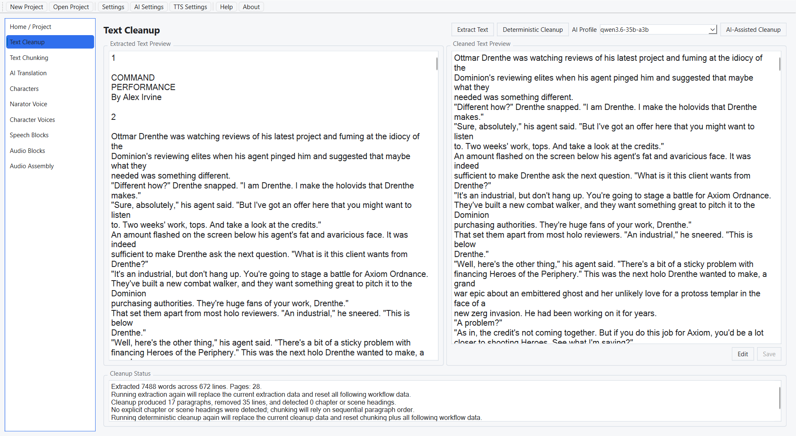
Text Chunking
Text Chunking splits the cleaned book into manageable chunks. Deterministic chunking is fast and repeatable. AI-assisted chunking can choose more natural scene or meaning boundaries for complex prose, but it costs model time and may take longer on local models.
- Generate chunks deterministically or with AI assistance.
- For a fresh AI chunking run, add optional extra prompt rules when the word-wrapped instructions box appears.
- Choose AI chunking strategy: Paragraph for stable paragraph windows, Meaning for semantic units, or Scene for scene-like boundaries.
- If AI returns no usable split for any text window, including the final window, AudioMancer preserves its structural boundaries when available and otherwise saves the window as one chunk. The progress note identifies the paragraph range, and the completed operation reports the total fallback-window count. A larger AI chunking context may produce more natural boundaries.
- Inspect generated chunks one by one.
- Edit generated chunk output before approval when the split or text needs manual correction. Confirm the impact prompt before editing because saved changes can affect downstream workflow data.
- Use Insert to add a new empty chunk after the selected chunk, then save the text you want in that new chunk.
- Use Delete to remove the selected chunk when it should not continue downstream.
- Confirm manual inserts and deletes only after checking the impact message. AudioMancer preserves unaffected translations, Speech Blocks, and Audio Blocks where possible, but resets Audio Assembly because the final ordered content changed.
- Approve chunks to unlock translation, character discovery, and Speech Blocks.
- Drag the divider between the reference/list area and the selected chunk preview; each side keeps at least one third of the page width.
- Interrupt chunking and continue it later from the saved checkpoint. The page shows whether a run is in progress, resumable, or complete without inventing an unavailable total-progress value. Checkpoints created by older AudioMancer break-ID chunking restart from the beginning.
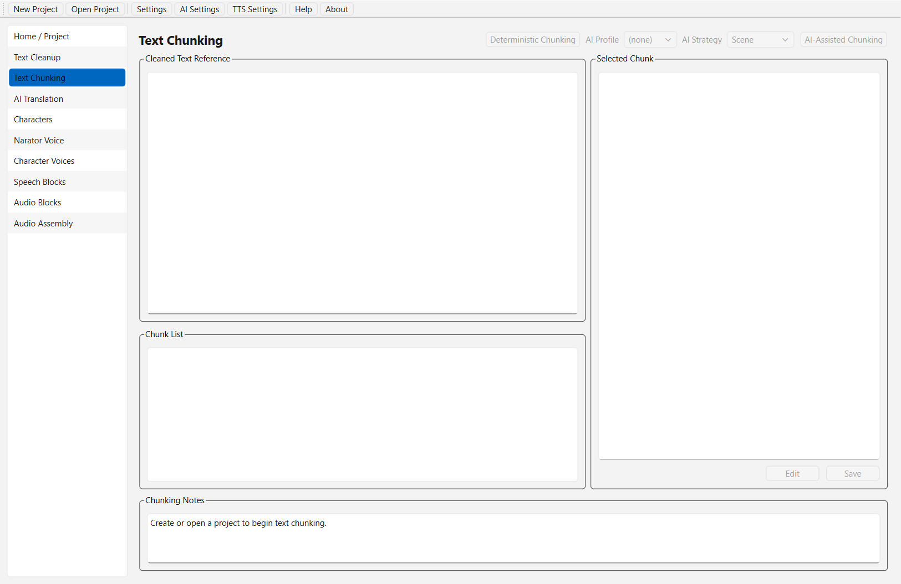
AI Translation
AI Translation is optional and is designed for literary translation: preserving tone, dialogue, character voice, narrative rhythm, and meaning rather than producing a mechanical word-for-word rewrite. Use it when the audiobook should be produced in another language. The target language is locked on the Home page and shown here as a read-only indicator. If source and target language match, AudioMancer still uses the configured AI profile when you start translation so the run can rewrite, normalize, or adapt the text rather than silently copying it.
- Supported translation targets: English, Romanian, Japanese, Korean, Chinese, German, French, Russian, Portuguese, Spanish, and Italian.
- Generate translation per chunk.
- Add optional operator translation rules in the word-wrapped prompt box before a fresh translation, a new pass from review, or selected-chunk retranslation. Resume keeps the rules stored with the interrupted run, while selected-chunk rules apply only to that one attempt.
- Inspect every translated chunk beside its source context.
- Edit translated chunk text manually before approval. Automatic saves keep the editing cursor, selection, undo history, and scroll position in place, and Start/Resume saves the latest pending edit before translation continues.
- The selected enabled AI profile stays selected during review refreshes for the current session.
- Re-Translate Selected becomes available only after translation has started and is disabled while translation is busy. If that one-chunk attempt fails or is cancelled, the current text, approvals, and downstream-ready completed state remain unchanged.
- Approve individual chunks or continue reviewing until all chunks are approved.
- Restart translation after changing profile/settings or when you want a fresh literary pass.
- Interrupt translation and continue later from the same project.
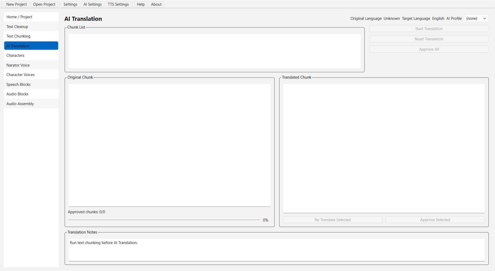
Characters
The Characters page uses AI to identify speaking roles, aliases, profile notes, evidence, and Qwen-oriented voice definition prompts. Review the result. Add, edit, delete, or regenerate voice definitions before moving to character voice samples. Character edits keep unrelated work intact, but affected Speech Blocks return to review and their generated audio is reset.
- Discover narrator and character profiles from approved chunks or translated chunks.
- Add optional operator Character Discovery rules in the word-wrapped prompt box before a fresh discovery run.
- Review names, aliases, gender/age hints, role notes, speaking style, and source evidence.
- Edit discovered characters when the model merges, misses, or mislabels a speaker. Assigned Speech Blocks become unapproved so speaker attribution can be reviewed.
- Add missing characters manually or delete false positives. Deleting a character changes affected Speech Blocks back to Narrator, marks them unapproved, and resets only their Audio Blocks.
- Regenerate dedicated voice-definition text for characters when the description is weak.
- Approve the character list before narrator and character voice work continues.
- Drag the divider between the character workspace and evidence; each side keeps at least one third of the page width.
- Interrupt discovery and continue later from the same project.
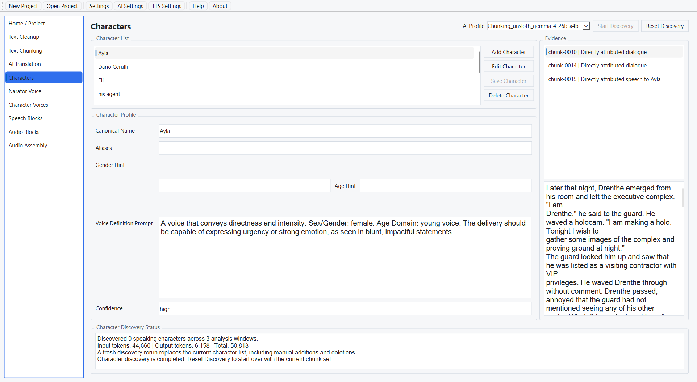
Narator Voice
The Narator Voice page prepares the main storytelling voice. Select a built-in or project-local profile, edit the prompt when needed, generate a VoiceWeaver sample, preview it, then select the narrator profile for the project.
- Inspect available narrator profiles and the selected project narrator.
- Use Generate Narator Profiles to create editable text-only AI profile suggestions, with optional operator profile rules in a word-wrapped prompt box before generation.
- Edit narrator prompt, preview text, and voice description before generation.
- Generate a VoiceWeaver sample for the chosen voice language.
- Play and stop narrator samples inside the page.
- Use the Select button above the profile list to choose the final narrator sample used downstream by Speech Blocks and Audio Blocks.
- Regenerate samples if the voice does not fit the book.
- Maximize the application window to give the Voice Designer Prompt and Preview Text panels equal expanded height automatically.
- Drag the divider between the profile list and editor; the compact profile list keeps at least one fifth of the page width and the editor keeps at least one third.
- Interrupt sample generation and resume the workflow later.
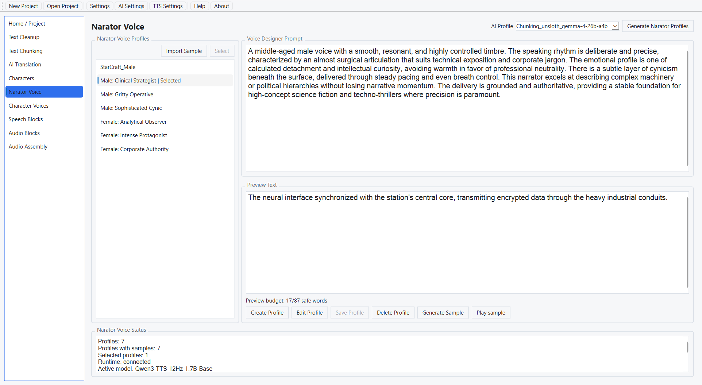
Character Voices
Character Voices prepares samples for discovered characters. In narrator-plus-character projects, each target can have its own prompt and VoiceWeaver sample. In same-narrator projects, this page is read-only for generation and reuses the selected narrator sample.
- Select each character voice target from the project character list.
- Review the character handoff prompt created during Character Discovery.
- Edit voice prompt and preview text before sample generation.
- Use Generate Character Samples to regenerate samples for all current character targets.
- Generate, play, stop, and regenerate VoiceWeaver samples per character.
- Changing one character voice preserves Speech Blocks and Audio Block rows, then clears only generated audio that uses that voice target. Narrator voice changes clear narrator-voice audio only.
- Approve or keep reviewing character voice assignments before Speech Blocks and Audio Blocks.
- Reuse narrator voice automatically in same-narrator mode.
- Drag the divider between the target list and editor; the list keeps at least one quarter of the page width and the editor keeps at least one third.
- Interrupt sample generation and continue later from the same project.
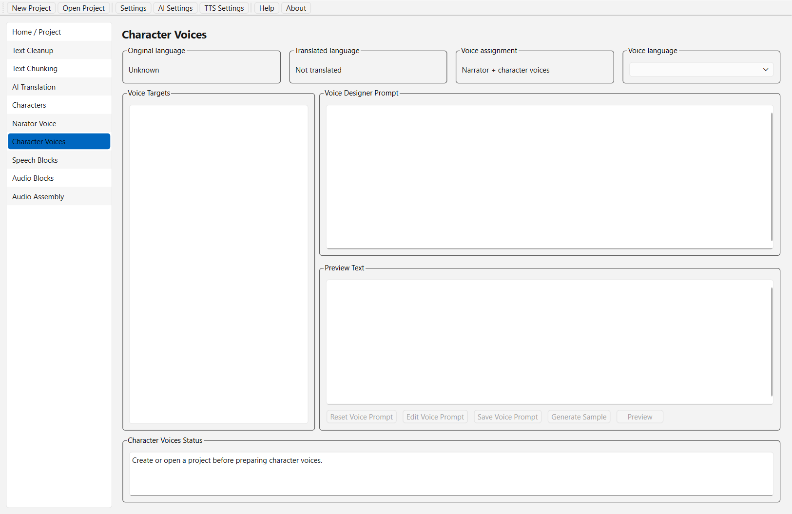
Speech Blocks
Speech Blocks split text chunks into audiobook instructions: narration, dialogue, pause, indication, and optional Scene Ambience sound cues. Narrator-plus-character projects use speaker-aware AI splitting, because deciding who is speaking needs a model.
Same-narrator projects do not call a model at all. Every block gets the narrator voice, so the only remaining decision is where the block boundaries go, and that is decided from the text structure itself: whole sentences are packed into evenly sized blocks, a sentence is never cut in half, and a quotation spanning several sentences is kept together. Generation is therefore instant, repeatable, and costs no AI tokens; an AI profile is only needed if Scene Ambience is switched on. Use TTS Settings → Narration Block Target to ask for shorter blocks than the TTS model budget allows.
Review each block. Use edit, insert, delete, re-split, approve, approve-all, character-count, Generate Audio, and Play/Stop controls to make the block list match the intended audiobook. Scene Ambience rows use dedicated fields for prompt, negative prompt, and duration.
- Generate Speech Blocks per approved text chunk.
- Use TTS Settings Scene Ambience Placement before generation or selected-chunk re-splitting to decide whether ambience blocks are created.
- Add optional operator Speech Blocks rules in the word-wrapped prompt box before fresh generation or selected-chunk re-splitting.
- Inspect speaker, block type, text, pause duration, indication, and Scene Ambience prompt fields.
- Scene Ambience is stored as separate ordered Speech Blocks. Each ambience block should describe one simple sound source or closely related sound type, not a composed ambience mix.
- Edit Scene Ambience prompt, negative prompt, and duration in the same selected-block detail area used for narrator and character blocks. Audio Blocks generation normalizes the generated sound duration to the Scene Ambience duration from TTS Settings.
- Edit selected blocks manually when attribution or text needs correction. If the selected block already has generated audio, the impact warning appears when you press Edit, before the editor unlocks.
- Use the selected-block character counter to compare current text length against the active TTS model limit.
- Insert or delete blocks to repair dialogue, pauses, or narration flow. Insert selects the inserted block; delete selects the next remaining block, or the previous row when the deleted block was last.
- Edit, save, insert, delete, approval changes, generation refreshes, and selected-chunk re-splitting preserve the selected-chunk text cursor, highlighted range, horizontal scroll, and vertical scroll. Insert still selects the inserted block; delete still selects the next or previous remaining block.
- Re-split selected chunks when the structure is not usable.
- Approve individual blocks or use approve-all after review. On an approved block, the same selected-block button changes to Unapprove and keeps that row selected.
- Use Generate Audio and Play/Stop on a selected approved block to preview exactly how the current Speech Block will sound without leaving the page.
- Editing, deleting, re-splitting, or changing speaker resets only the affected Audio Block. Inserting, approving, or unapproving a Speech Block preserves generated Audio Blocks and resets Audio Assembly.
- Reset Speech Blocks when upstream text, translation, characters, or voice mode changes.
- Drag the divider between Selected Chunk and Speech Blocks; each lower pane keeps at least one third of the page width.
- Interrupt generation and continue later without losing approved blocks.
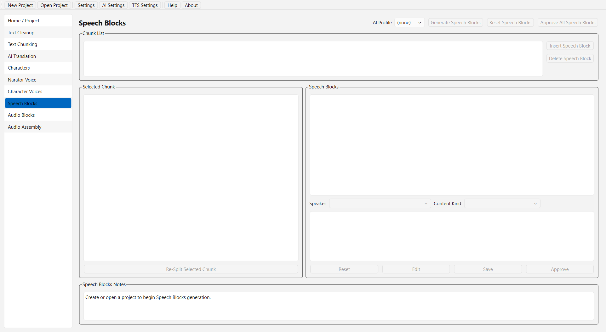
Audio Blocks
Audio Blocks sends approved spoken Speech Blocks to VoiceWeaver and stores generated WAV files
under audio_blocks/. Approved Scene Ambience blocks can also be generated through
VoiceWeaver's sound-prompt path when Scene Ambience Audio is enabled. Pause and indication blocks
do not call the voice model. Long spoken blocks may be split when needed and
stitched back together.
Generate, preview, regenerate selected blocks when needed, and approve audio only after listening. AudioMancer asks you to regenerate affected audio after text, voice, language, sample, model, prompt, or duration changes.
- Generate WAV audio for approved spoken Speech Blocks.
- Use the Scene Ambience Audio selector to include or skip approved ambience blocks during Audio Blocks generation.
- Generate Scene Ambience WAV files from each block's prompt and negative prompt, using the Scene Ambience duration from TTS Settings.
- Use Start Audio Generation to continue after adding or deleting Speech Blocks. Existing generated Audio Blocks are skipped even when they are not approved yet; only current approved blocks without audio are generated.
- Skip TTS calls for pause and indication blocks.
- Split long spoken text when needed and stitch valid generated parts into one block output.
- Preview generated block audio with Play/Stop controls.
- Regenerate selected blocks after prompt, voice, or text corrections. A single selected regeneration does not touch unrelated Audio Blocks.
- Approve generated audio after listening.
- Reset stale Audio Blocks when upstream inputs change.
- Drag the divider between Source Text and the block review area; each side keeps at least one third of the page width.
- Interrupt generation and continue later from the same project.
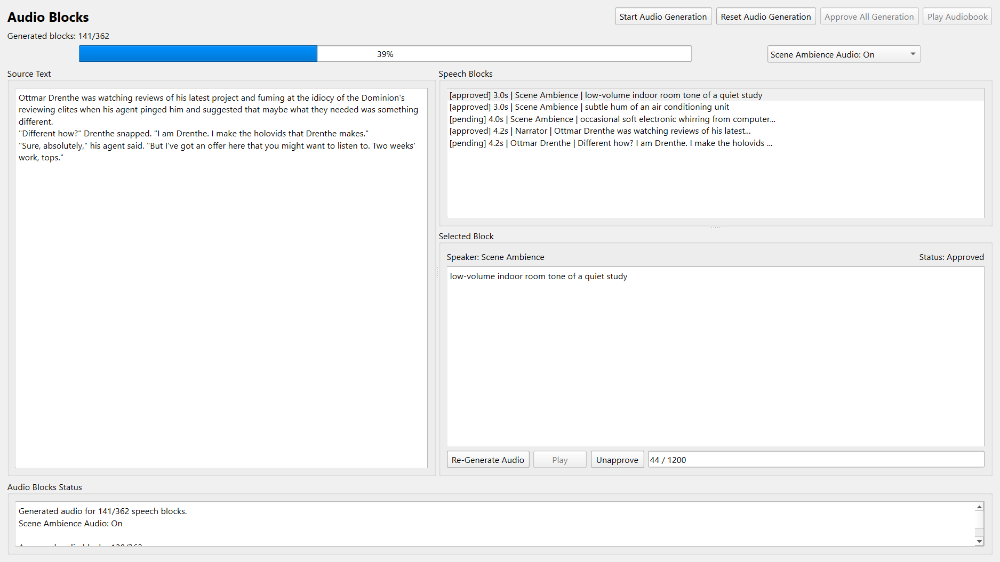
Audio Assembly
Audio Assembly combines approved Audio Blocks into final WAV audiobook files under the project
audiobook/ folder. Output modes are one file per text chunk, duration-limited parts,
or one whole-book file.
Pause Speech Blocks become exact silence. Automatic inter-block and inter-chunk silence can be configured. Long operations can be interrupted and continued later when inputs and settings still match the current project inputs.
Scene Mix Previews lists available Scene Ambience groups. Generate or refresh a selected mix to overlay its approved prompt WAVs into one ambient bed, then play that mixed scene before final assembly. Final assembly uses the same mix path when Include Scene Ambience is on.
Select a generated file to preview it. The inline playback bar shows current position and total duration, supports drag-to-seek, and provides -10s / +10s quick jumps. Double-click a generated file to stop current Audio Assembly playback and restart the clicked file from the beginning.
- Choose output mode: per chunk, duration-limited parts, or whole audiobook.
- Configure inter-block and inter-chunk silence.
- Generate and play Scene Mix previews for approved Scene Ambience groups.
- Generate final WAV deliverables into the project
audiobook/folder. - Review generated files from the page list.
- Use Play/Stop, double-click playback, seek bar dragging, and 10-second jumps for long files.
- Reset and regenerate assembly when output settings or approved Audio Blocks change.
- Interrupt assembly and continue later when the current inputs still match.
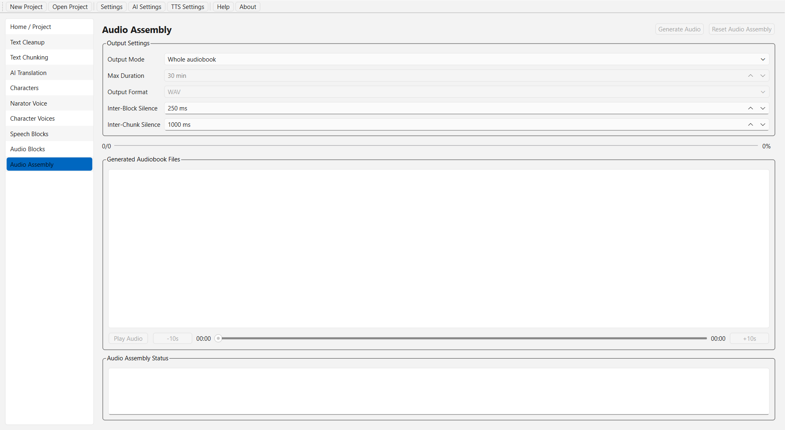
Export And Results
The Home page can export cleaned text, chunks, AI translations, characters, and Speech Blocks as
text files. It can also export Narator Voice samples, Character Voices samples, and Audio Assembly
outputs as ZIP archives. Voice ZIP exports include the generated WAV sample plus a companion text
file with the voice definition and preview text; Audio Assembly ZIP exports include the WAV output
files and a manifest with composition method, file list, duration, and size details.
Export Project ZIP creates a full project snapshot. Final audiobook WAV files are
saved inside the project folder under audiobook/.
Export buttons become available only after the matching phase has produced approved data. Use the Home page status list to see which phases are complete, pending, or waiting for review.
Troubleshooting
Buttons are disabled
Most pages depend on earlier pages. Follow the sidebar from top to bottom and approve required results before continuing.
No audio is generated
Start VoiceWeaver, verify the base URL in TTS Settings, run Test Connection, and confirm that the required VoiceWeaver models are available.
AI text operations fail or return bad JSON
Use lower temperature, a larger timeout, a larger context window, or a stronger JSON-following model. Local LM Studio models can be slower than hosted OpenAI models.
The app says data is stale
Reset or regenerate downstream pages after changing earlier text, voice, language, sample, or model inputs.
Long operation was cancelled
Many workflows can resume. Reopen the same page and press the generation/start button again when the page offers continuation.
Glossary
- Project: one folder that stores the source book, generated files, settings, and final audio.
- AI profile: a chat-model configuration for text workflows.
- VoiceWeaver: the required runtime for current AudioMancer audio generation.
- Chunk: a section of the book used for review and generation.
- Speech Block: one instruction for narration, dialogue, pause, indication, or Scene Ambience.
- Audio Block: generated WAV audio or a non-spoken timing/instruction entry for one approved Speech Block.
- Audio Assembly: the final step that combines Audio Blocks into audiobook WAV files.